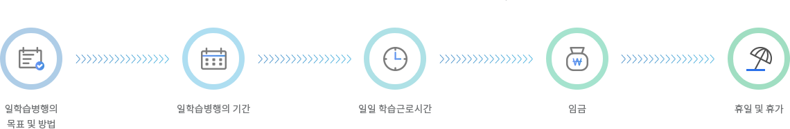

산업현장의 실무형 인재양성을 위하여 기업이 취업을 원하는 청년 등을 학습근로자로 채용하여, 맞춤형 체계적 훈련을 제공하고,
훈련종료 후 학습근로자 역량평가 및 자격 인정을 통한 노동시장의 통용성을 확보합니다.
| 고용보험법 | 제27조(사업주에 대한 직업능력개발 훈련의 지원) 고용노동부장관은 피보험자 등의 직업능력을 개발·향상시키기 위하여 대통령령으로 정하는 직업능력개발 훈련을 실시하는 사업주에게 대통령령으로 정하는 바에 따라 그 훈련에 필요한 비용을 지원할 수 있다. |
|---|---|
| 근로자직업능력개발법 | 제20조(사업주 및 사업주단체 등에 대한 직업능력개발 지원)①고용노동부장관은 다음 각 호의 어느 하나에 해당하는 직업능력개발사업을 하는 사업주나 사업주단체·근로자단체 또는 그 연합체(이하 “사업주단체등”이라 한다)에게 그 사업에 필요한 비용을 지원하거나 융자할 수 있다. 근로자 직업능력개발훈련(위탁하여 실시하는 경우를 포함한다. |
※ 사업의 세부적인 운영은「일학습병행 운영 및 평가규정」(2017.6.1.개정, 고용노동부고시 제2017-29호) 및「일학습병행 운영규칙」(2017.10.10.제정)을 적용
일학습병행 운영 및 평가규정에 대한 자세한 내용은 아래의 홈페이지에서 확인하실 수 있습니다.
| 대상 및 유형 | 명칭 | 주요 내용 | |
|---|---|---|---|
| 재직자 | 단독기업형 (50인 이상) | 해당 기업에서 현장훈련(OJT)과 현장외훈련(Off-JT) 실시 | |
| 공동훈련센터형(20인 이상) | 공단이 승인한 외부 전문훈련기관(공동훈련센터)에서 현장외훈련(Off-JT)을 제공하고, 기업에서 현장훈련(OJT) 실시 | ||
| 後학습 | P-Tech(재직자 과정) | 도제학교 졸업생 등을 대상으로 지역폴리텍 등과 연계하여 융합·신기술 중심의 고숙련 훈련과 학위 취득을 지원하는 후학습과정 | |
| 재학생 | <고교 단계> 특성화고 2~3학년 |
산학일체형 도제학교 | 학교와 기업을 오가며 직업교육·도제훈련 통한 현장성 제고 |
| <고교ㆍ전문대> 고교ㆍ전문대 통합교육 |
고교ㆍ전문대 통합교육 (Uni-Tech) |
전문대 중심 고교(2년)+전문대(1년반)과정 통합 운영 * 단, 자체 사업계획에 따라 유니테크는 부득이한 경우를 제외하고 신규기업 모집 중단 |
|
| <전문대 단계> 전문대2학년 |
전문대 단계 일학습병행 | 전문대 재학생(졸업반)을 대상으로 하는 일학습병행 | |
| <전문대 단계> 4년제大 3~4학년 |
IPP형 일학습병행 |
3~4학년 학생이 학기제(4~6月) 방식으로 일학습병행 참여 | |
| 산학일체형 도제학교 | ’15년 9개교 시범운영 → ’18년 67개 사업단(3개 기관, 194개교)으로 확대 |
|---|---|
| 전문대 재학생 단계 | ’18년 3개교 시범사업 추진 |
| IPP형 일학습병행 | ’15년 13개교 → ’18년 38개교 운영 |
| 재직자 단계 | ’14년 42개 기관 → ’18년 70개 기관 |
|---|---|
| P-TECH (고숙련일학습병행) |
’17년 6개 기관 시범운영 → ’18년 23개 기관 |
일학습병행에 참여하고자 하는 기업은 아래의 요건을 모두 갖추어야 함
｢고용보험법｣ 제8조 및 ｢고용보험 및 산업재해 보상보험의 보험료징수 등에 관한 법률｣ 제5조에 따라 고용보험에 가입되어 있을 것
참여 신청일 현재 상시근로자 수가 50인 이상일 것(공동훈련센터형 학습기업의 경우 20인 이상일 것)
해당 직종의 일학습병행을 실시할 수 있는 적정 규모 이상의 인적.물적 자원 및 경영능력을 갖추고 있을 것
일학습병행을 실시하려는 직종과 관련된 기업현장교사를 확보, 또는 확보계획을 가지고 있을 것
※ 근거: 일학습병행 운영 및 평가 규정 제5조제1항
상시근로자 수가 5인 이상인 기업이 참여 신청일을 기준으로 아래 요건 중 하나에 해당할 경우 일학습병행에 참여 가능
※ 근거: 일학습병행 참여기업 모집 공고문
| 산학일체형 도제학교 / 유니테크 | 상시근로자 수가 10인 이상인 기업이 참여 신청일을 기준으로 아래 요건 중 하나에 해당할 경우 일학습병행에 참여 가능 ※ 경영·회계·사무, 문화예술·디자인, 식품가공, 인쇄·목재·가구·공예, 음식서비스, 숙박·여행·오락, 보건·의료, 의복 분야(NCS대분류 기준)는 엄정한 현장심사와 추천절차를 통해 5인 이상 기업도 참여 일부 허용 |
|---|
지정 요건과 지정 예외 요건을 충족하더라도 다음의 하나에 해당하는 기업은 일학습병행에 참여할 수 없음
｢근로기준법｣ 제43조의2에 따라 체불사업주로 명단이 공개 중인 자가 운영하는 기업
｢산업안전보건법｣ 제9조의 2에 따라 산업재해 발생건수 등 공표 명단에 포함된 기업으로 명단 공개 기준일로부터 1년이 지나지 않은 기업
｢근로자직업능력개발법｣ 제24조 및「근로자직업능력개발법」시행규칙 제8조의 2에 따른 처분기간 중에 있는 기업
학습기업의 지정이 취소된 날로부터
1년이 경과하지 않은 기업
학습기업으로 인정을 받으려는 사업주 및 공동훈련센터가 학습기업 참여 신청서를 허위 제출한 사실이 적발된 날로부터 1년이 경과하지 않은 기업
※ 근거: (①∼③) 일학습병행 운영 및 평가 규정 제5조제2항, (④∼⑤) 일학습병행 운영규칙 제4조제1항
이미 지정된 학습기업이 다음의 하나에 해당할 경우 공단은 학습기업의 지정을 취소하거나 추가 훈련을 제한할 수 있음,
다만 학습기업의 지정이 취소되더라도 훈련이 진행 중인 학습근로자의 훈련은 중지하지 않을 수 있음
거짓이나 그 밖의 부정한 방법으로
학습기업의 지정을 받은 경우
학습기업이 일학습병행 참여를
포기하거나 훈련과정 진행 중 폐업
등으로 인해 일학습병행을 계속
하여 수행하는 것이 불가능한 경우
학습기업 지정일로부터 1년이
경과한 시점까지 정당한 사유없이
일학습병행을 실시하지 않은 경우
공단이 발표하는 훈련성과 미흡
기관 명단에 포함된 기업으로 공고
일로부터 1년이 지나지 않은 기업
※ 근거: 일학습병행 운영규칙 제4조제2항
학습기업 지정은 정기공모와 수시선정 방식으로 구분
| 구분 | 정기공모 | 수시선정 |
|---|---|---|
| 모집기간 | 공단에서 인터넷 등에 공고(‘17년 매 분기별 진행) | 연중 상시 모집 |
| 모집대상 | 재직자 단계 NCS기반자격형 | 정기공모 모집대상 이외(재학생 단계, 대학연계형 과정 등) |
| 공고내용 | 학습기업 지정요건 모집기간, 신청방법, 제출서류 등 그 밖에 지원금, 지원기간 등 |
없음 |
| 수행사항 | 공고사항에 따른 일괄 진행 | 지부·지사 자체적 계획 수립·실시 |
| 진행절차 | 신청서 접수 → 컨설팅 기관의 사전컨설팅 → 서류심사 및 현장실사 → 최종선정 | 신청서 접수 → 서류심사 및 현장실사 → 최종선정 |
학습근로자는 훈련생인 동시에 ｢근로기준법｣에 의한 근로자 신분을 동시에 가짐
따라서 임금, 해고, 휴가 등 근로조건과 산업안전, 4대 사회보험 가입 등에 대한 사항이 관련 법률에 따라 보호됨
※ 근거: 일학습병행 운영 및 평가규정 제2조제3호
아래에 해당하는 자는 학습근로자가 될 수 없음
고용보험 피보험자가 아닌 자
일학습병행 훈련실시일 이전 1년 이내 채용된 근로자가 아닌 자. 단, 고숙련자 양성 등을 목적으로 하는 P-tech 과정은 훈련실시일 이전 1년 이내 채용자가 아니라도 참여 가능
대한민국 국적이 아닌 외국국적자 중 재외동포(F4), 영주권자(F5), 결혼 이민자(F6) 이외의 비자를 소지한 근로자
※ 근거: 일학습병행 운영규칙 제14조
학습근로자 선발·채용에 관한 사항은 학습기업의 자체적 채용절차 및 기준에 따르며, 근로자 채용에 있어서 학습기업은 고용노동부(고용센터) 등 관련기관의 지원을 받을 수 있음
학습기업의 사업주가 일학습병행을 실시하려는 경우 아래 사항을 모두 포함하여 학습근로자와 학습근로계약을 체결하여야 하며, 학습근로자가 미성년자인 경우에는 법정대리인의 동의가 있어야 함
※ 근거: 일학습병행 운영규칙 제13조
학습근로자와 학습근로계약을 체결한 사업주는 이를 학습근로자에게 서면으로 교부하고 학습근로계약 각 호의 사항을 변경하는 경우에도 또한 같음
※ 근거: ｢근로기준법｣ 제17조
OJT 훈련비, Off-JT 훈련비, 숙식비 및 일학습병행 훈련지원금
※ 근거: 일학습병행 운영 및 평가규정 제10조제1항
훈련실시일로부터 1개월 이상 훈련을 실시한 사업주 및 공동훈련센터
※ 근거: 일학습병행 운영 및 평가규정 제11조제2항
| 구분 | 항목 | 상시근로자 1,000인 미만 기업 | 상시근로자 1,000인 이상 기업 | 비고 | |
|---|---|---|---|---|---|
| OJT 훈련비 (NCS기반 자격과정) |
단독기업형 학습기업 |
’15.4.1 이전 지정기업 |
직종별단가 x 훈련인원 x 훈련시간 x 3 (1.5) |
직종별단가 x 훈련인원 x 훈련시간 x 3(1) |
직종별단가×훈련인원×훈련시간×3(1* (연차별 감액 지급) 1년차 100%, 2년차 90%, 3년차 80%, 4년차 70% 2015.4.1. 이전 지정된 학습기업 중 선정 후 1년이내 훈련 실시 신고를 한 훈련만 해당 |
| ’15.4.1 이후 지정기업 |
직종별단가 x 훈련인원 x 훈련시간 x 2(1) |
(연차별 감액 지급) 1년차 100%, 2년차 90%, 3년차 80%, 4년차 70% |
|||
| 공동훈련센터형 학습기업 | |||||
| Off-JT훈련비 (NCS기반자격과정) |
단독기업형 학습기업 |
기업 자체 실시 | 직종별단가 × 훈련인원 × 훈련시간 × 3(1.5) |
직종별단가 × 훈련인원 × 훈련시간 × 3(1) |
|
| 외부위탁 훈련기관 실시 |
- 직종별단가 × 훈련인원×훈련시간 × 조정계수*)의 3배까지 정산없이 지원하되 실비 수준을 심사하여 5배까지 지원 가능 모듈형과정의 경우(직종별단가×훈련인원×훈련시간×조정계수*)의 실비수준을 심사하여 지원하되 1.5배 한도내에서 정산없이 지원 - 대학연계형은 학기당 최대 300만원 한도에서 지급(모체학과 등록금을 초과할 수 없음) - 공동훈련센터가 인프라 비용을 지원받지 않는 경우 공동훈련센터에 학습기업 OJT 훈련비의 10% 추가 지급 |
||||
| 공동훈련센터형 학습기업 | |||||
※ 가로 안은 모듈형 과정의 경우 해당
학습근로자가 소정근로시간에 훈련에 참여함에 따라 발생하는 사업주의 노동력 손실을 보전하기 위해 사업주에게 지원하는 훈련비
※ (예산) 사업주직업훈련지원금(보험금)
※ (근거) ｢고용보험법 시행령｣ 제41조제3항제5호, 일학습병행 운영 및 평가규정 제10조제1항
사업주가 학습근로자에게 지급한 월 임금에 따라 매월 최대 40만원 한도 내에서 사업주에게 지원하고, 훈련기간에 따라 연차별 감액 지급
훈련기간 동안 공동훈련센터 또는 단독기업형 외부위탁기관이 학습근로자에게 제공하는 숙식비 지원
※ (예산) 사업주직업훈련지원금(보험금)
※ (근거) ｢고용보험법 시행령｣제41조제1항제1호, 제42조제4항제1호, 사업주 직업능력개발훈련 지원규정 제17조제3항, 일학습병행 운영 및 평가규정 제10조제1항
공동훈련센터 또는 단독기업 외부위탁기관이 1일 평균 5시간 이상 Off-JT를 실시하고 학습근로자에게 숙식을 제공하거나 숙식비를 지급한 경우에는 훈련비용 외에 별도로 식비는 1일 3,300원까지,숙식비는 1일 14,000원(월 330,000원)까지 지원 가능
해당 월 훈련실시시간에 비례하여 활동수당 지원
| 대분류 | 학습근로자수 | 연간 한도액 |
|---|---|---|
| 기업현장교사 | 1명 | 400만원 |
| 2명 | 500만원 | |
| 3명 | 600만원 | |
| 4명 | 700만원 | |
| 5명 | 800만원 | |
| 6명 | 900만원 | |
| 7명 | 1,000만원 | |
| 8명 | 1,100만원 | |
| 9명 | 1,200만원 | |
| 10명 | 1,300만원 | |
| 11명 | 1,400만원 | |
| 12명 | 1,500만원 | |
| 13명 이상 | 1,600만원 | |
| HRD담당자 | 300만원 | |